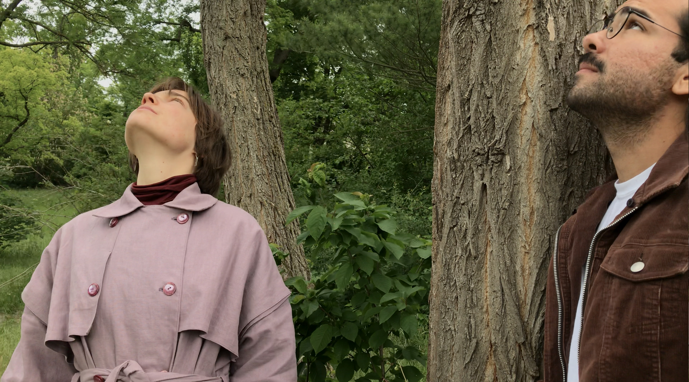
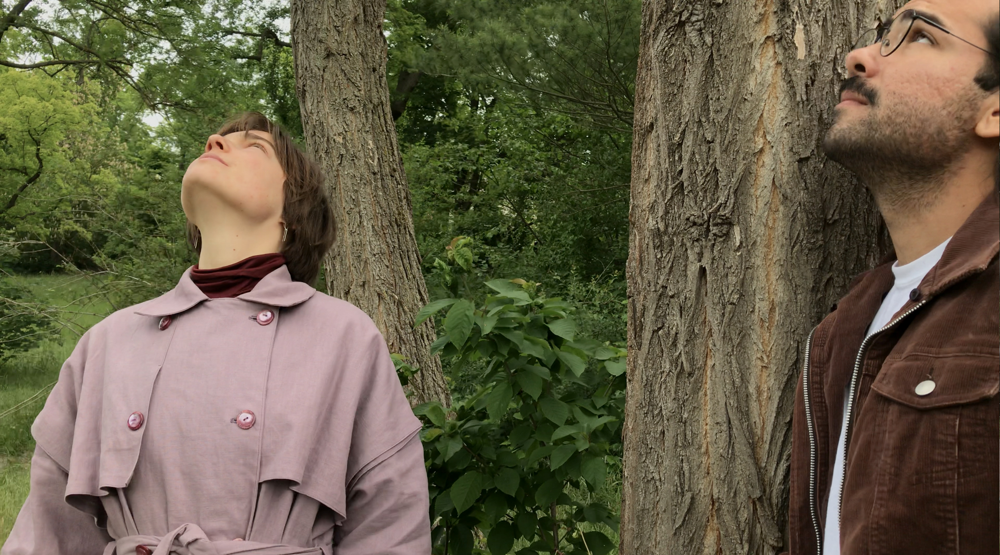

Walks for Fluid Spaces
Fluidity is the water running through the riverbed.
Fluidity is the possibility of facing complex situations in life.
Fluidity are the no well-defined objects or entities of space that can dissolve and re-form without breach or continuity.
PhD research into human experiences of fluid spaces. Focussing on the dynamic Rhine environment, I invite inhabitants that life along the Rhine to join me on journeys passed histories, memories, wishes, thoughts, fears, adaptations, and usage of the river and it’s multiple characteristics.
Aspects of the research:
- development of walking strategy
- creating walking conversation toolkit
- collection of stories
- documenting the narratives
Documentation by Paloma Llambias


 
